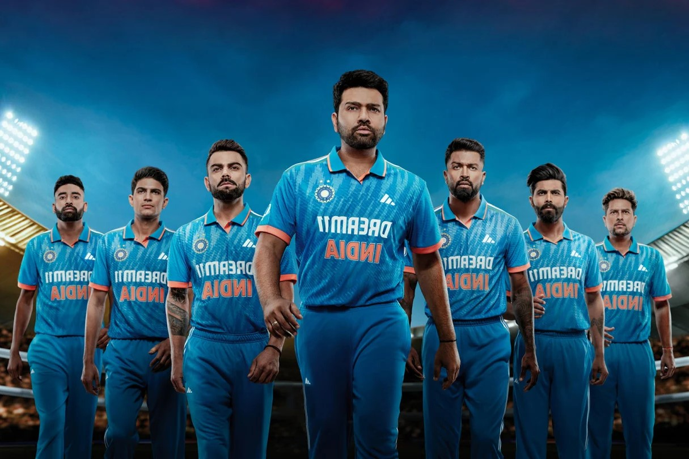
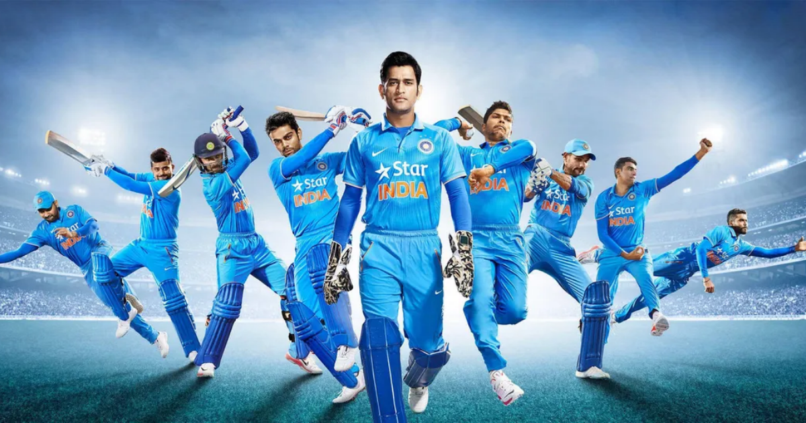
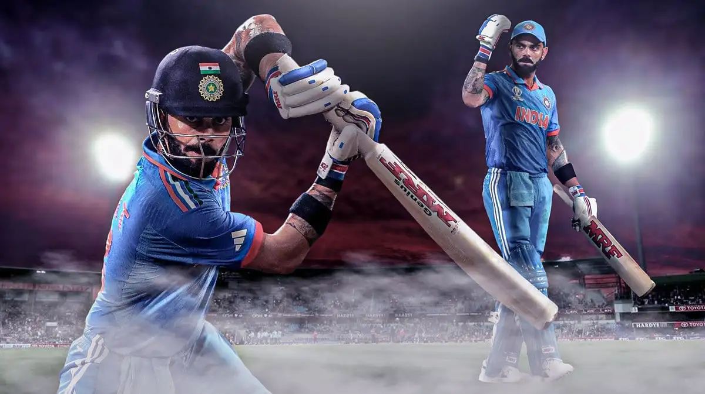

Cricket is one of the most popular sports in the world, especially in countries like India, Australia, England, and Pakistan. It is played between two teams of eleven players each. Cricket is known for its strategy, teamwork, and exciting matches. The sport has millions of fans worldwide.
  Cricket originated in England during the 16th century. It became an international sport during the British colonial period. The first official international cricket match was played in 1844. Over time, cricket developed into different formats, making it more exciting and faster for modern audiences.
Each format has its own importance and fan base.
Cricket is played between two teams of eleven players. One team bats while the other bowls and fields. The batting team tries to score runs, while the bowling team tries to dismiss the batsmen. After both teams complete their innings, the team with the highest score wins.
These tournaments attract millions of viewers globally.
“ICC Cricket World Cup Final Highlights”